Lecture Notes
Throughout the years I have typed notes (with varying degrees of quality) of some of the courses I took. Some of the notes, specially the ones from my undergraduate, are really quite rough compilations of theorems and examples, but they did help some people revise, so here they are posted. Some more recent notes are those from my time in Cambridge, these ones are of significantly higher quality, although they probably lack examples on some cases. Read at your own risk, since they are probably full of typos and errors. I may revise the notes which I am most proud of to ensure they are actually legible.
King’s College London
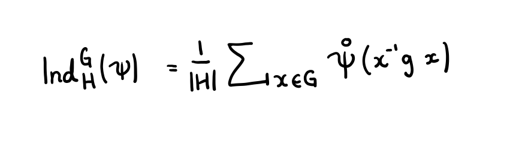
Representation Theory of Finite Groups
Introductory course on finite group representations and character theory. Slightly incomplete but with many examples
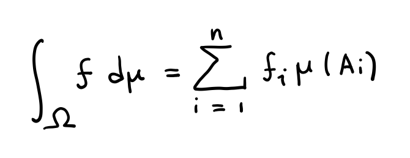
Fundamentals of Probability Theory
A course in elementary probability theory, essential to understand some of the notes that come next.
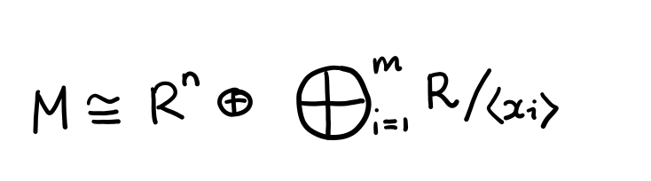
Rings and Modules
A first course in the theory of rings and modules. Slightly incomplete, but with many examples. For a questionably written compilation of exercises, you may also want to check this out.
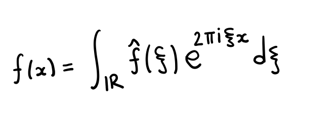
Fourier Analysis
A first course in Fourier Analysis. Slightly incomplete and a bit of a mess, but with many examples.
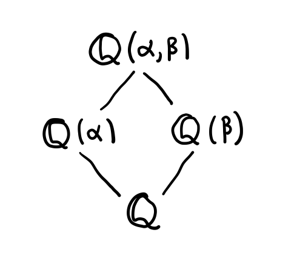
Galois Theory
A first course in Galois Theory. These notes require heavy revision, but have many examples.
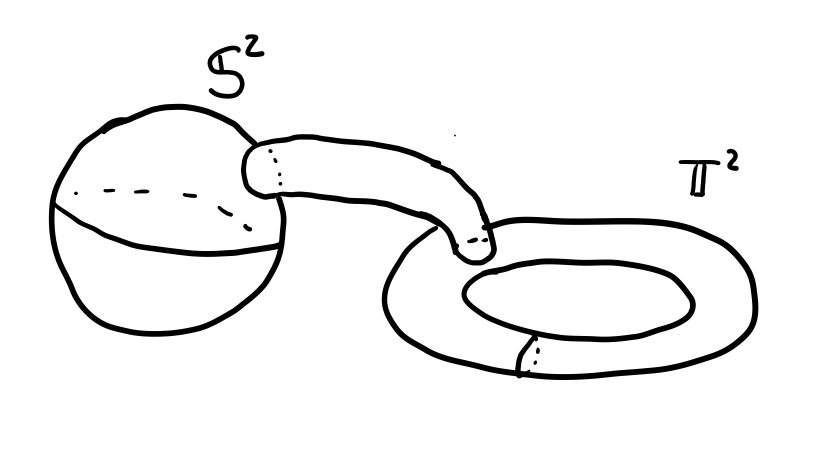
Geometric Topology
A course in low-dimensional Topology. I am sort of proud of these notes. Many examples included
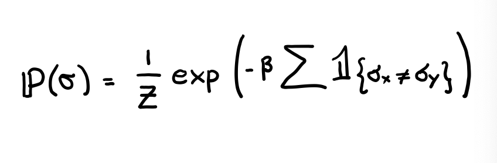
Mathematical Aspects of Statistical Mechanics
A in the mathematical foundations of Statistical Mechanics. These notes require heavy revision.
Cambridge – Part III
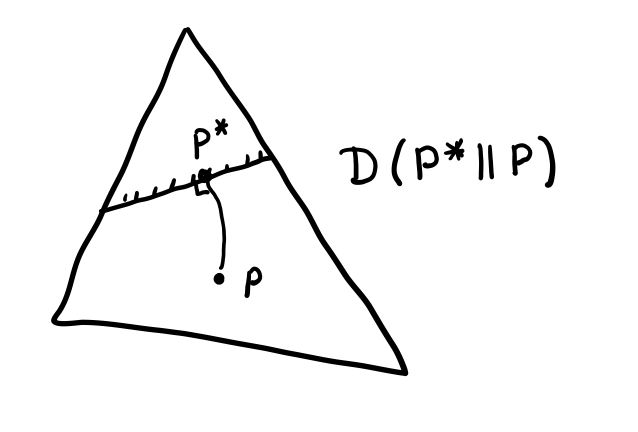
Information Theory
A first course in Information Theory. The course was a great exposition of some of the main concepts of the theory, including data compression theorems, large deviation theory, coding theorems, etc. These notes are lacking in examples but I am proud of them.
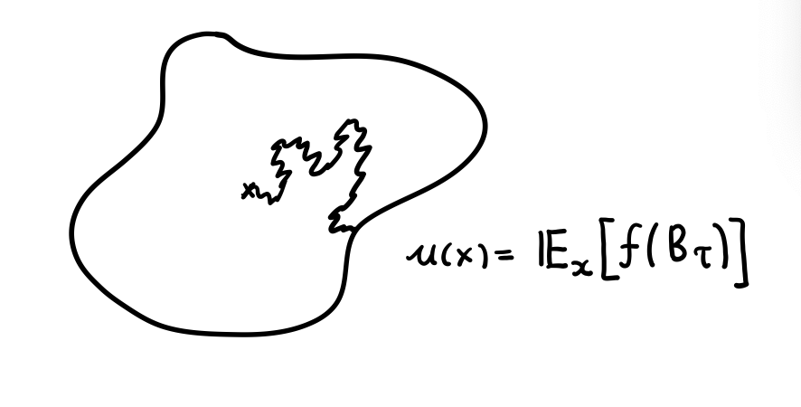
Advanced Probability
A second course in Probability Theory, that is to say Martingales, Brownian Motion, and other important topics in Probability.
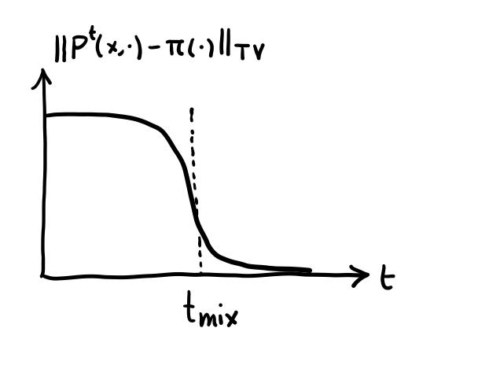
Mixing Times of Markov Chains
A first course in the theory of mixing of Markov chains. Not for the faint of heart. I cried more than once studying this.
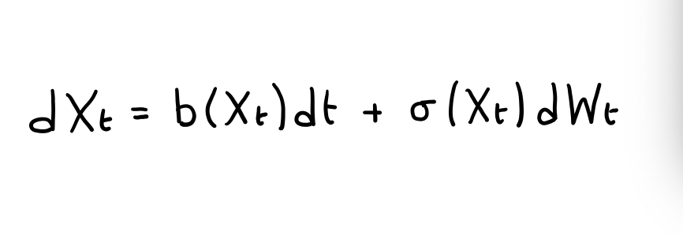
Stochastic Calculus
A first course in Sochastic Calculus. These notes require revision.
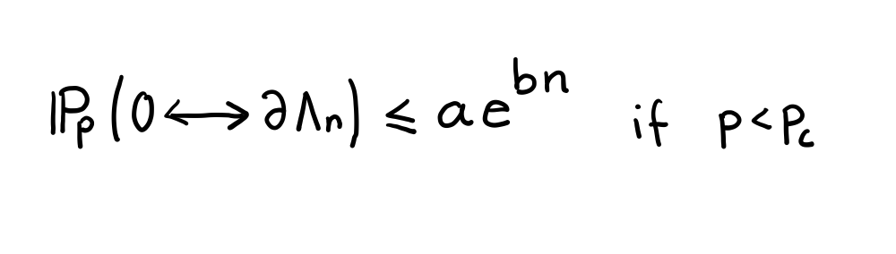
Random Structures in Finite Dimmensional Space
A beautiful course on some topics in Random Geometry and Statistical Mechanics. I'm quite happy with these notes but they are incomplete in the later chapters.